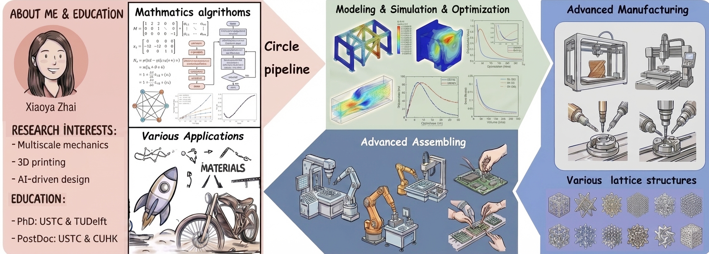

Overall introduction

Employment
Graphics & Geometric Computing Laboratory, School of Mathematical Sciences, USTC
Assistant Professor
Topic: AI for Microstructures design; Computer aided geometric design
Aug. 2023 – Present
Department of Mechanical and Automation Engineering, The Chinese University of Hong Kong
Research Associate
Cooperation Supervisor: Prof. Wei-Hsin Liao
Topic: Negative Poisson's ratio structure design
Topic: Negative Poisson's ratio structure design
Sep. 2022 – Aug. 2023
Graphics & Geometric Computing Laboratory, School of Mathematical Sciences, USTC
Postdoctoral Fellow
May. 2021 – Aug. 2023
Education
Graphics & Geometric Computing Laboratory, School of Mathematical Sciences, USTC
Ph.D.
Supervisor: Prof. Falai Chen
Topic: Structural Design and Path Planning in Additive Manufacturing
Topic: Structural Design and Path Planning in Additive Manufacturing
Jul. 2015 – May. 2021
Department of Sustainable Design Engineering, Delft University of Technology, The Netherlands
Joint Doctoral Training
Supervisor: Prof. Jun Wu
Topic: Topology optimization of differentiable microstructures
Topic: Topology optimization of differentiable microstructures
Sep. 2019 – Mar. 2021
Science of Information & Computation, Northeastern University
Bachelor's Degree
Sep. 2011 – Mar. 2015
Honors & Awards
入选中国工业与应用数学学会几何计算专委会（CSIAM GDC）优秀青年学者激励计划, 2026
入选中国工业与应用数学学会青年人才托举项目（合作导师：包刚院士）, 2025
入选中国科学技术大学仲英青年学者项目, 2025
Outstanding Ph.D. Thesis Award of Chinese Academy of Sciences, 2022 （中国科学院百篇优博论文）
Outstanding Graduates of USTC, 2021 （中国科学技术大学优秀毕业生）
Ph.D. Dissertation Excellence Program, 2020 （中国科学技术大学博士论文创优计划）
National Scholarship in China, 2017 & 2014
Meritorious Winner of MCM/ICM, 2014
Academic Services
Organizations
Topology Optimization Section of Advances in Computer Graphics, USTC, 2023
（中国科学技术大学《计算机图形学前沿》课程）
Seminar on Frontiers of Mathematics and Interdisciplinarity, USTC, 2023
（中国科学技术大学《数学与交叉学科前沿研讨会》）
Membership
Member of Geometric Design and Calculation Committee of China Society of Industrial and Applied Mathematics （中国工业与应用数学学会几何设计与计算专业委员会委员 / GDC专委）
Executive Member, CCF Professional Committee （CCF专业委员会执行委员 / CAD&CG专委）
GAMES: Graphics And Mixed Environment Symposium, Professional Committee （GAMES执行委员）
安徽省图形计算与感知交互重点实验室，秘书长